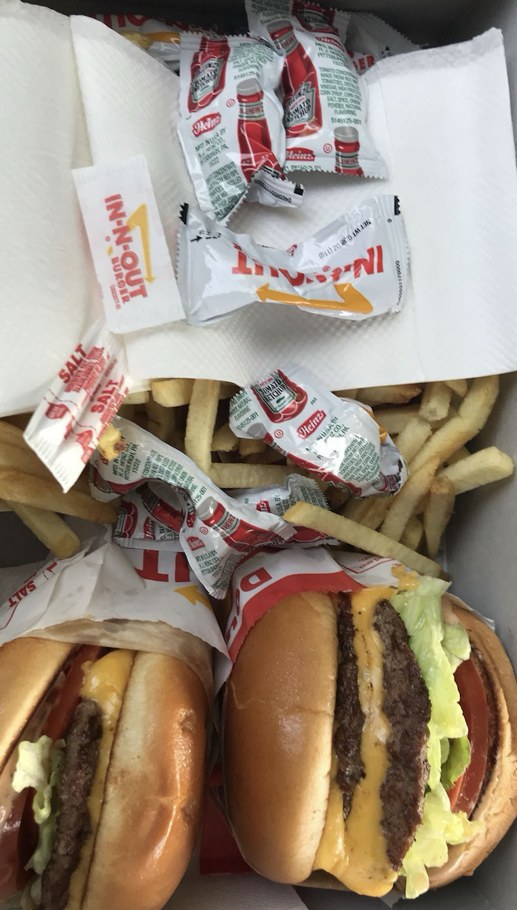
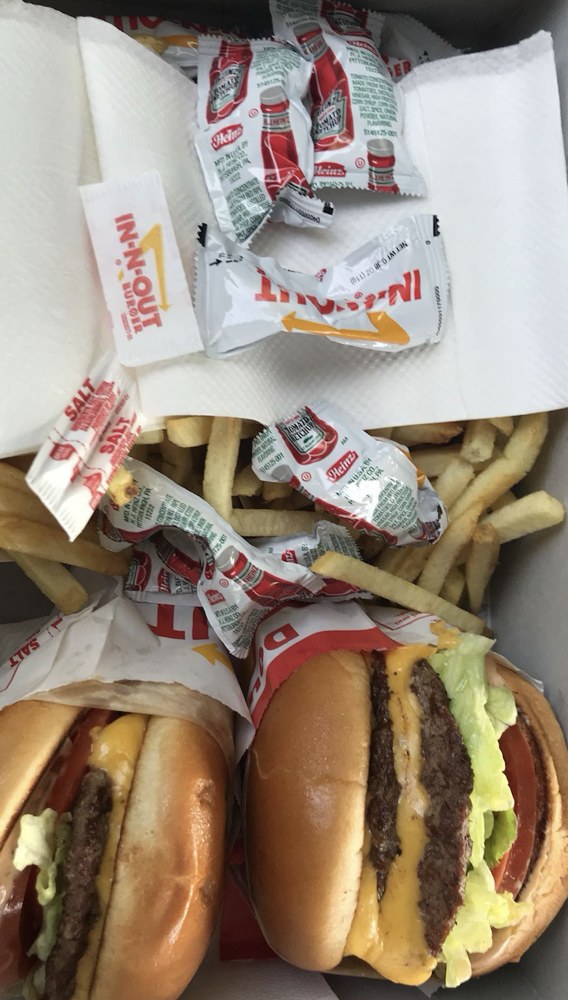

Picture of me and my brother at the aquarium
First time trying In-N-Out
My parents used to have a house here, so whenever we visited the West Coast, this is where we would always stay. I have so many memories in this house, especially from the summers—inviting my friends from Hong Kong to stay with us, going to the zoo, buying new toys and scooters, and spending hours playing in the pool. These are memories that will always be in the back of my mind. Even though we sold the house when I entered high school, the experiences I had there still shape a part of who I am. Sacramento represents a piece of my identity that bridges where I come from and where I feel at home, blending cultures, friendships, and moments into something lasting.
Picture of me and my brother at the aquarium
First time trying In-N-Out